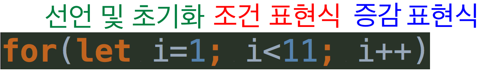

자알쓰란?
자바스크립트 알고 쓰자. (잘 쓰자는 의미도 담겨있다.)
자바스크립트라는 언어 자체는 내 기준에서는 설계 상 미스가 참 많다.
함수 단위의 스코프, 호이스팅, 동적 타입 등등
자바와 같은 깐깐(?)한 언어를 배우고 바라본 자스는 허점 투성이처럼 보였다.
애초에 자바스크립트는 어떠한 프로그램을 만들기 위해서 탄생했다기 보다는
웹 페이지에 입력값에 대한 유효성 검사(데이터가 공란인지 아닌지 등등)와 같은
페이지의 동적 제어가 주된 목적 + 짧은 개발 기간(넷 스케이프 사의 새로운 브라우저에 탑재 예정) 때문에
설계 상에 미스가 있을 수 밖에 없다고 나는 생각된다.
일종의 안전 장치가 없어서 개발자가 일일이 구현해주고, 신경써야 하는 느낌이었다.
그렇다고 해서 자바스크립트를 극혐하거나 그런 것은 아니고 매우 사랑한다.
또한 그 허점을 아는 사람은 허점을 보완해서 요리조리 피해서 잘 쓰겠지만…
잘 모르는 부분들은 잘못 써도 동작이 잘 되기 마련이다.
이는 지금 당장에는 큰 문제가 안 될지 모르겠지만, 추후에 대규모 웹 어플리케이션을 만들거나
직면할 문제로부터 미리 해방시키기 위해 처음부터 좋은 습관을 들여가는 것이 좋다고 생각한다.
이번에도 번외편 격으로 반복문의 진실에 대해 알아보도록 하자.
반복문의 진실?
사실 리덕스의 하나의 진실의 근원(Single Source of Truth)에서 영향을 받았다.
우선 가장 간단한 1~10까지 더해서 출력하는 for 문을 살펴보도록 하자.
for 문은 아래와 같이 나눌 수 있다.

다른 곳에서는 선언 및 초기화, 조건식, 증감식으로 했는데
나는 거기다 표현식까지 붙였다.
위 구문은 아래와 같이 줄일 수 있다.
for, while, if 문 등등은 실행 구문이 한 줄이면 대괄호가 생략 가능하다.
증감 표현식은 필수가 아니다.
또한 초기화 및 선언 구문도 필수가 아니기 때문에
아래와 같이 줄일 수 있지만 전역 스코프를 더럽힐 가능성이 있기 때문에
해당 변수를 스코프 외부에서도 쓰려는 특수한 경우가 아닌 이상은 권장하지 않는다.
이제부터 나오는 걸 실무에서 사용했다간 협업자나 사수에게 등짝 스매싱을 당할 수도 있다.
하지만 증감 표현식을 달리 생각해보면 그냥 표현식으로 볼 수도 있다.
반복문의 실행 구문, {} 안의 내용(여기선 생략했지만),이 끝난 이후에 한 번 실행되는 표현식에 불과하다고 볼 수 있다.
아래와 같이 말이다.
sum += i++ 이게 문이 아니라 표현식으로써 쓰일 수가 있다.
표현식이라 하면 평가(실행)를 하여 값을 반환할 수 있으면 표현식이라 부를 수 있다.
sum += i++에 의해 우선 sum에 sum + i++의 값이 할당되게 된다.
그리고 그 반환값은 sum + i++이 된다.
하지만 우리에게 중요한 것은 sum에 sum + i++의 값이 담겼다는 게 중요하지 그것의 반환값은 중요하지 않다.
또한 그 자체만으로 표현식이기 때문에 조건과 관련이 있는 i에 i++과 같은 증감의 내용을 담고 있다면
증감 표현식 자리에 반복문의 실행 구문이 들어갈 수 있게 되는 것이다.
하지만 여기서 멈춘다면 진실의 근원으로부터 멀어질 수가 있다.
이 증감 표현식 부분 마저도 줄여버릴 수가 있다.
아래와 같이 말이다.
&& 뒷부분을 괄호로 묶어주지 않으면 && 연산자가 우선순위가 더 높아
11 && sum을 먼저 평가하고 거기다가 += 연산을 수행하므로 괄호로 묶어줘야한다.
&& 연산자의 동작 원리가 궁금한 사람은 을 참고하자.
물론 해당 내용은 while에게도 적용이 된다.
do-while은 귀찮으니 그만 알아보자.